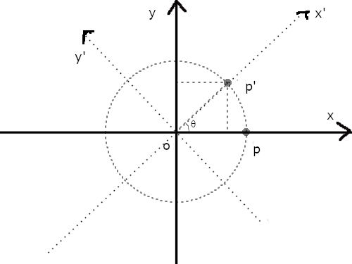
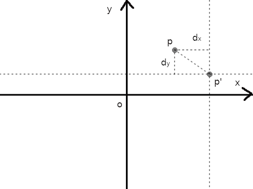
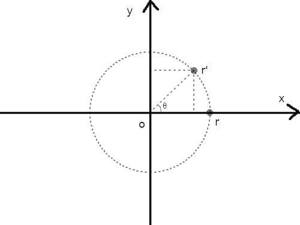
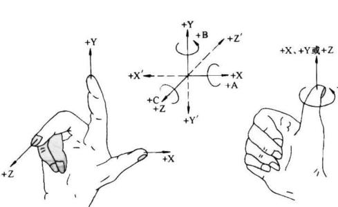
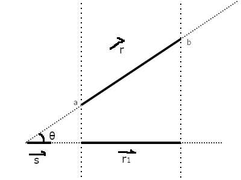
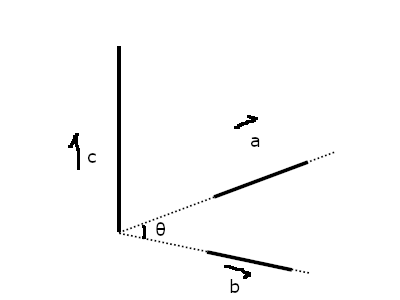
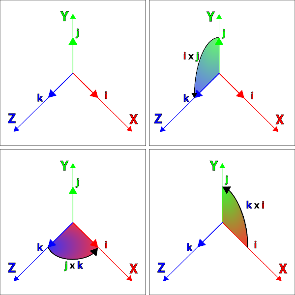

图形学-几何变换
Table of Contents
几何变换(geometric transformation)是图形学里面的一个重要基础知识点,
所谓的几何变换可以它看做一个函数就是: 输入几何对象里面的所有点,输出一个新的几何对象.
举个例子,假如 \(p\) 点在坐标系 \(A\) 中的坐标是 \(\left(x, y\right)\),假设现在坐标系 \(B\) 是整个 \(A\) + \(p\) 逆时针旋转 \(\theta\) 度后得到的,
同样 \(p\) 也跟着 \(A\) 的旋转到达 \(p^{'}\) 这个位置, \(p^{'}\) 在 \(B\) 上也是 \(\left(x, y\right)\), 但是 \(p^{'}\) 在 \(A\) 的坐标呢?
现在就是要求 \(p^{'}\) 在 \(A\) 上的坐标 \(\left(x^{'}, y_{'}\right)\).
首先 \(A\) 和 \(B\) 分别是描述 \(p\) 和 \(p^{'}\) 自身的坐标系, \(p\) 有 可能 会处于 \(A\) 的原点位置, \(p^{'}\) 和 \(B\) 同理,
\(A\) 和 \(B\) 分别叫做 \(p\) 和 \(p^{'}\) 的物体坐标系(object coordinate system),每个物体都有自己的物体坐标系.
\(p^{'}\) 实际上 就是 \(p\) 相对于 \(A\) 坐标系原点的移动结果,这种相对自己的物体坐标系进行的变换就是几何变换(geometric transformation).

其实这里也可以看成是坐标变换(coordinate transformation),也就是从坐标系 \(A\) 变成坐标系 \(B\) 时, \(p^{'}\) 在 \(A\) 上的坐标是多少,
也就是改变了物体参照的坐标系,这里并不是说坐标变换就等于几何变换,只是这里是恰好可以看作一样而已,几何变换本质是在改变物体本身.
举个例子,一辆车在某个位置,现在想让车远离某一个人,那么有两种做法,一是把车开走,二是让人走开.
把人看作是车的物体坐标系的原点,车开走就是几何变换;车不动而人走开就是坐标系变换.
从人的角度来看,不管是哪种方式都可以实现车和人的距离拉远.坐标变换会在下一篇文章讲.
所以它们虽然本质不一样,但是它们的计算都基本都是 \(Ax = y\) 这种形式.
回到主题,常见的几何变换包括对象的 缩放,平移以及旋转,这些都可以通过矩阵来进行描述.
而矩阵的含义就是等同于"映射/变换",所以在了解之前需要先了解一些线性代数的知识,我也不是这方面的专家,就不分享自己微不足道的学习经验了.
实际上如果单纯只是为了应用的话,记住结论就可以了,但是个人认为,如果真的打算与图形学打交道,那么只有理解了为什么才能愉快地与图形学相处,
否者会过得很痛苦.很多参考资料都是直接给出变换的结论,没有推导过程,或者有不完全的推导过程,所以我才下定注意写下自己思考.
在 Better Explained 的 Intuitive Understanding Of Euler's Formula 上有一句话我非常喜欢:
Formulas are not magical spells to be memorized: we must, must, must find an insight,
而 insight 的其中一个解释是 a deep intuitive understanding of a person or thing,
所以这句话的意思是: 公式不是需要记忆的魔法咒语,我们要对公式有一个直观了解,包括公式是如何推导(reason)得到的,有什么意义,解决什么问题.
1. 实际例子
用一个人 "John Smith" 走路去坐巴士作为演示,通过 伸缩/平移/旋转 这三个词进行描述,为了容易理解,我们把 "John Smith" 看作一个长方体,
场景: John Smith 往他的前方直行到一个路口,左转后继续直行到巴士停靠的位置,最后上车坐车.
解释:
- 往他的前方直行 就是一个 平移,直行了多远就是沿着他的方向平移了多远.
- 左转 就是一个 旋转,向左边方向旋转了多少度,这里假设是90度,通常路口都是直角.
- 上车坐车 就是一个 伸缩,可能车门的高度不高过 John Smith 的身高,所以 John Smith 要弯下腰降低高度,这样就是沿着身高缩放了.
如果这个过程要通过数学的方式描述出来,那么就要进入正文了,等了解完以后回这个例子感受以下.
2. 几个该清楚的概念
2.1. 欧几里得空间以及仿射空间
欧几里得空间(Euclidean space)是一套度量空间(这里的空间真的是时空里的空间),基于向量空间/线性空间补充一些新定义(向量的长度,以及向量之间的一些"乘法",这些会在文章后面需要用上的时候进行补充),
在数学上经常用于研究二维以及三维空间,大概知道它用来干什么就可以了,这里也不详细说.
笛卡尔坐标系(Cartesian coordinate system) 是一套坐标系,分为正交坐标系以及斜交坐标系(区别就是坐标轴之间是否相互垂直,是的话就是正交坐标系,否的话就是斜交坐标系).
正交坐标系刚好和欧几里得基于三个相互垂直的向量构成一个3维空间这点一致,所以可以认为笛卡尔坐标系为欧几里得空间提供了一把标尺.
任何通过原点的直线或者平面都是欧几里得的子线性空间(线性空间必须包含原点,而子线性空间本质还是线性空间).
那些没有通过原点的直线或者平面就是仿射空间(Affine space)的一个例子,它们也具备线性,所以通俗点理解:仿射空间相当于线性空间去掉原点,或者子线性空间平移后得到的空间.
由于仿射空间没有原点这个概念,所以坐标系这个概念也不复存在,向量不再是从原点出发到某个点的直线了,而是退化为了点,并且点也不能通过坐标表示.
不过就算没有了原点,在仿射空间下依然可以通过 \(x\) 和 \(y\) 两个点来找到一条直线 \(v\)(从 \(x\) 移动到 \(y\))作为类似线性空间的向量: \(v = y - x\),差别在于出发点不同.
这个从点到点之间的移动的变换就叫仿射变换(Affine Transformation),以后还会遇到它.
虽然点没有办法用坐标来表示,不过由于仿射空间具备线性,在研究空间问题时可以引入仿射空间解决问题,也就是说,可以用仿射空间的概念来处理坐标系上的问题.
3. 2D变换
2D 变换和 3D 变换同等重要,并且有一定的联系,先理解 2D 变换有助于理解 3D 变换.
在 2D 变换中,这里所有的例子都是基于平面版本的正交坐标系,用矩阵表示该坐标系就是 \(\left(\begin{array}{c}1 & 0 \\ 0 & 1\end{array}\right)\).
也就是 \(y\) 轴的正方向是向上, \(x\) 轴的正方向是向右.
这里还需要一位主角: 点 \(p\), 它的坐标为 \(\left(x_{p}, y_{p}\right)\).
我们把该坐标系看做属于 \(p\) 自身的坐标系,这种坐标系叫做目标坐标系(object coordinates),后面的 3D 变换推导也是一样.
3.1. 平面平移
基本的平面平移分两个方向: 沿着 \(x\) 轴和沿着 \(y\) 轴平移,分别的移动距离是 \(d_{x}\) 和 \(d_{y}\).
所以描述 \(p\) 的平移是这样的: 先沿着 \(x\) 轴方向移动 \(d_{x}\),然后沿着 \(y\) 轴方向移动 \(d_{y}\).

Figure 1: 平面平移
这里先沿着 \(x\) 轴移动 \(d_{x}\) 还是先沿着 \(y\) 轴移动 \(d_{y}\) 都无所谓,到达的最终地点都是 \(p^{'}\): \(\left(x_{p}^{'}, y_{p}^{'}\right) = \left(x_{p}+d_{x}, y_{p}+d_{y}\right)\).
用矩阵表示就是这个平移的过程就是 \(\left(\begin{array}{c}x_{p}^{'} \\ y_{p}^{'} \\ 1 \end{array}\right) = \left(\begin{array}{c}1 & 0 & d_{x} \\ 0 & 1 & d_{y} \\ 0 & 0 & 1\end{array}\right)\left(\begin{array}{c}x_{p} \\ y_{p} \\ 1\end{array}\right)\).
要注意,在3种变换中,只有平移不是线性变换,它是仿射变换.
这里用函数 \(translate(p, d_{x}, d_{y})\) 表示平移.
这里还有一个有趣的事实,就是 \(translate(p, d_{x}, d_{y})\) 后到达 \(p^{'}\),如果 \(p^{'}\) 再发生一次平移 \(translate(p^{'}, dx^{'}, dy^{'})\) 到达 \(p^{''}\),这整个过程等于 \(translate(p, d_{x} + d_{x}^{'}, d_{y} + d_{y}^{'})\).
还有就是三种变换中只有平移会导致 \(p\) 偏移了原点,这个事实会在以后的坐标系变换学习里面提到.
3.2. 平面伸缩
和平面平移类似,伸缩也分两个方面: 坐标系的 \(x\) 轴变为原来的 \(r_{x}\) 倍, 坐标系的 \(y\) 轴变为原来的 \(r_{y}\) 倍.
坐标系伸缩后 \(p\) 到达 \(p_{'}\): \(p^{'}\): \(\left(x_{p}^{'}, y_{p}^{'}\right) = \left(r_{x}x_{p}, r_{y}y_{p}\right)\).

Figure 2: 平面伸缩
用矩阵表示这个伸缩的过程就是 \(\left(\begin{array}{c}x_{p}^{'} \\ y_{p}^{'}\end{array}\right) = \left(\begin{array}{c}r_{x} & 0 \\ 0 & r_{y}\end{array}\right)\left(\begin{array}{c}x_{p} \\ y_{p}\end{array}\right)\).
这里用函数 \(scale(p, r_{x}, r_{y})\) 表示.
3.3. 平面旋转
平面旋转就是坐标系围绕着原点进行旋转,旋转后得到一个新的坐标系,并且 \(p\) 到达 \(p_{'}\).
新坐标系的 \(y^{'}\) 轴和 \(x^{'}\) 轴分别就是原来的 \(y\) 和 \(x\) 旋转 \(\theta\) 得来的.
不过现在先不这么想,等过了一轮推导后再回来看.
在 \(x\) 轴取一个点 \(r\): \(\left(1, 0\right)\),从原点出发分别到这个点,根据这条线画一个圆.
旋转 \(\theta\) 度后到达 \(r^{'}\): \(\left(x_{r}^{'}, y_{r}^{'}\right)\),把这条线 \(\vec{or^{'}}\) 看作是三角形的斜边,这条线的长度 \(\|\vec{or^{'}}\|\) 为 1.

Figure 3: 平面旋转
再结合一点三角函数可以得出 \(x_{r}^{'} = \frac{x_{r}^{'}}{\|\vec{or^{'}}\|} = \cos \theta\) 以及 \(y_{r}^{'} = \frac{x_{y}^{'}}{\|\vec{or^{'}}\|} = \sin \theta\),
所以 \(r^{'} = \left(\cos \theta, \sin \theta\right)\).
接下来再推导 \(y\) 轴上的 \(\left(0, 1\right)\) 经过旋转后的 \(r^{''}\),这里可以直接继续用 \(r\) 开始旋转来进行推导,
\(r^{''}\): \(\left(x_{r}^{''}, y_{r}^{''}\right)\) 就是 \(r\) 旋转 \(90 + \theta\) 度后到达的坐标,
同样结合三角函数可以得出 \(x_{r}^{''} = \frac{x_{r}^{''}}{\|\vec{or^{''}}\|} = \cos \left(90+\theta\right)\) 以及 \(y_{r}^{''} = \frac{x_{y}^{''}}{\|\vec{or^{''}}\|} = \cos \theta\).
而 \(\cos \left(90+\theta\right) = - \sin \theta\),所以这里也可以看作是从 \(\left(0, 1\right)\) 旋转,所以 \(r_{''} = \left(-\sin\theta, \cos\theta\right)\).
回到最开始说到的,本质是坐标轴的旋转,我们得到的 \(r^{'}\) 以及 \(r^{''}\) 恰好就可以作为表示新坐标系的基向量,
所以新坐标系的基底就是 \(\left(\begin{array}{c} \cos\theta & -\sin\theta \\ \sin\theta & \cos\theta \end{array}\right)\).
用矩阵表示 \(p\) 围绕原点旋转 \(\theta\) 度这个过程就是 \(\left(\begin{array}{c}x_{p}^{'} \\ y_{p}^{'}\end{array}\right) = \left(\begin{array}{c} \cos\theta & -\sin\theta \\ \sin\theta & \cos\theta \end{array}\right)\left(\begin{array}{c}x_{p} \\ y_{p}\end{array}\right)\).
这里用函数 \(rotate(p, \theta)\) 表示.
3.4. 综合三种平面变换
上面三种变换可以通过一个通用的矩阵表示,而实际开发中很多工具都提供了对应的接口,综合起来就是 \(\left(\begin{array}{c}a & b & e \\ c & d & f \\ 0 & 0 & 1\end{array}\right)\).
可以只通过一个矩阵表示多次变换,也就是多个变换的矩阵全部相乘得到的那个矩阵.
这里用函数 \(matrix(a, b, c, d, e, f)\) 表示,实际中不同工具中的参数顺序可能是不一样的,所以这个不用太在意.
3.5. 拓展思考
目前提到平面旋转是 \(p\) 围绕原点旋转的,那么围绕任意点 \(q\): \(\left(x_{q}, y_{q}\right)\) 呢?
可以这么思考,先把 \(q\) 设定为新原点 \(o^{'}\): \((0, 0)\),也就是旧原点 \(o\) 变换到 \(o^{'}\),这是一个平面平移.
在新原点下, \(p\) 的新坐标是 \(\left(x_{p} - x_{q}, y_{p} - y_{q}\right)\).
剩下的就是围绕新原点 \(o^{'}\) 进行旋转了,同样在新 \(x\) 轴上取一个点 \(r\): \((1, 0)\),用这根从 \(o^{'}\) 到 \(r\) 的线条以 \(o^{'}\) 为中心画一个圆,
剩下推导过程就是和之前的一样了,最后得出和以前一样的矩阵 \(\left(\begin{array}{c} \cos\theta & -\sin\theta \\ \sin\theta & \cos\theta \end{array}\right)\).
然后 \(p\) 通过矩阵到达 \(p^{'}\): \(\left(\begin{array}{c} \cos\theta & -\sin\theta \\ \sin\theta & \cos\theta \end{array}\right)\left(\begin{array}{c}x_{p} - x_{q} \\ y_{p} - y_{q}\end{array}\right) = \left(\begin{array}{c} (x_{p} - x_{q})\cos \theta - (y_{p} - y_{q})\sin \theta \\ (x_{p} - x_{q})\sin \theta + (y_{p} - y_{q})\cos \theta \end{array}\right)\).
最后再把原点平移回去,\(p^{'}\) 的坐标就变成 \(\left(\begin{array}{c} (x_{p} - x_{q})\cos \theta - (y_{p} - y_{q})\sin \theta + x_{q} \\ (x_{p} - x_{q})\sin \theta + (y_{p} - y_{q})\cos \theta + y_{q} \end{array}\right)\).
说到这里,如何用矩阵表示这个变换过程就很明了了:
按照 \(q\) 的分量平移 \(p\) : \(\left(\begin{array}{c} 1 & 0 & -x_{q} \\ 0 & 1 & -y_{q} \\ 0 & 0 & 1 \end{array}\right)\);
然后围绕新原点 \(p\) 旋转 \(\theta\): \(\left(\begin{array}{c} \cos\theta & -\sin\theta & 0 \\ \sin\theta & \cos\theta & 0 \\ 0 & 0 & 1 \end{array}\right)\);
最后 \(p\) 平移回去: \(\left(\begin{array}{c} 1 & 0 & x_{q} \\ 0 & 1 & y_{q} \\ 0 & 0 & 1 \end{array}\right)\);
把这三个矩阵依次乘起来: \(M = \left(\begin{array}{c} 1 & 0 & x_{q} \\ 0 & 1 & y_{q} \\ 0 & 0 & 1 \end{array}\right)\left(\begin{array}{c} \cos\theta & -\sin\theta & 0 \\ \sin\theta & \cos\theta & 0 \\ 0 & 0 & 1 \end{array}\right)\left(\begin{array}{c} 1 & 0 & -x_{q} \\ 0 & 1 & -y_{q} \\ 0 & 0 & 1 \end{array}\right)\),
经过旋转 \(p\) 的坐标为: \(Mp = \left(\begin{array}{c} (x_{p} - x_{q})\cos \theta - (y_{p} - y_{q})\sin \theta + x_{q} \\ (x_{p} - x_{q})\sin \theta + (y_{p} - y_{q})\cos \theta + y_{q} \\ 1 \end{array}\right)\).
和之前推导的结果是一样的(如果你会用 Emacs 的 Calc,强烈建议使用它来验证推导结果).
4. 3D变换
3D 变换可以想象成是 2D 变换的升级版: 多了一个维度.不过就算这么说,实际上 3D 变换的推导过程要远比 2D 变换的推导复杂很多.
主角 \(p\) 来到 3D 后就变成 \(\left(x_{p}, y_{p}, z_{p}\right)\),坐标系变成三维版本的正交坐标系,用矩阵表示就是 \(\left(\begin{array}{c}1 & 0 & 0 \\ 0 & 1 & 0 \\ 0 & 0 & 1 \end{array}\right)\).
这里要说一下,这里用的是右手坐标系(right-hand system), \(z\) 轴的正方向指向屏幕外, \(y\) 轴正方向指向上方, \(x\) 轴正方向指向右边,旋转方向是逆时针.

Figure 4: 右手坐标系(图片来自网络)
有右手坐标系就有左手坐标系,不同之处在于 \(z\) 轴的正方向以及旋转的方向相反.
4.1. 三维平移
这个很简单,就是比平面平移多了一个维度,推导过程没什么好说的,用矩阵表示这个平移的过程就是 \(\left(\begin{array}{c}x_{p}^{'} \\ y_{p}^{'} \\ z_{p}^{'} \\ 1 \end{array}\right) = \left(\begin{array}{c}1 & 0 & 0 & d_{x} \\ 0 & 1 & 0 & d_{y} \\ 0 & 0 & 1 & d_{z} \\ 0 & 0 & 0 & 1 \end{array}\right)\left(\begin{array}{c}x_{p} \\ y_{p} \\ y_{z} \\ 1\end{array}\right)\).
4.2. 三维伸缩
这个也很简单,同样没什么好说,用矩阵表示这个伸缩的过程就是 \(\left(\begin{array}{c}x_{p}^{'} \\ y_{p}^{'} \\ z_{p}^{'}\end{array}\right) = \left(\begin{array}{c}r_{x} & 0 & 0 \\ 0 & r_{y} & 0 \\ 0 & 0 & r_{z}\end{array}\right)\left(\begin{array}{c}x_{p} \\ y_{p} \\ z_{p}\end{array}\right)\).
4.3. 三维旋转
这个就稍微复杂一点,多了一个维度就多了很多种旋转方式了,和平面旋转不一样在于: 平面旋转是围绕某一个点进行的,而三维旋转是围绕某一条直线进行的.
所以这里分好几种情况,不过如果能够真正理解平面旋转的推导,这里再只要加一把劲就可以理解了.
4.3.1. 围绕 \(z\) 轴进行旋转
这种围绕某一轴旋转的问题可以统一看做垂直于该轴的平面旋转,这么一说是不是脑海里面有画像了?
围绕 \(z\) 轴进行旋转就是 \(x\) 和 \(y\) 轴构成的平面的平面旋转, \(p\) 经过旋转后到达 \(p^{'}\): \(\left(x_{p}^{'}, y_{p}^{'}, z_{p}\right)\).
没错,围绕 \(z\) 轴旋转的话, \(p^{'}\) 的 \(z\) 分量没有变,再仔细想一下, \(x\) 和 \(y\) 构成的平面旋转不就是在 2D 变换里面推导的那一个吗?
假设现在围绕 \(z\) 轴旋转 \(\theta\) 度,那么这个旋转过程用矩阵表示就是 \(\left(\begin{array}{c}x_{p}^{'} \\ y_{p}^{'} \\ z_{p}^{'} \end{array}\right) = \left(\begin{array}{c} \cos \theta & -sin \theta & 0 \\ \sin \theta & \cos \theta & 0 \\ 0 & 0 & 1 \end{array}\right)\left(\begin{array}{c} x_{p} \\ y_{p} \\ z_{p} \end{array}\right)\).
既然 \(z\) 轴都推导出来了,那么围绕 \(x\) 轴以及 \(y\) 轴都分别可以开始推导出来.
4.3.2. 围绕 \(x\) 轴进行旋转
如同上面的推导,可以快速得出 \(p\) 围绕 \(x\) 轴旋转 \(\theta\) 度后到达 \(p^{'}\) 的过程,用矩阵表示 \(\left(\begin{array}{c}x_{p}^{'} \\ y_{p}^{'} \\ z_{p}^{'} \end{array}\right) = \left(\begin{array}{c} 1 & 0 & 0 \\ 0 & \cos \theta & -\sin \theta \\ 0 & \sin \theta & \cos \theta \end{array}\right)\left(\begin{array}{c} x_{p} \\ y_{p} \\ z_{p} \end{array}\right)\).
4.3.3. 围绕 \(y\) 轴进行旋转
同理, \(p\) 围绕 \(y\) 轴旋转 \(\theta\) 度后到达 \(p^{'}\) 的过程,用矩阵表示 \(\left(\begin{array}{c}x_{p}^{'} \\ y_{p}^{'} \\ z_{p}^{'} \end{array}\right) = \left(\begin{array}{c} \cos \theta & 0 & \sin \theta \\ 0 & 1 & 0 \\ - \sin \theta & 0 & \cos \theta \end{array}\right)\left(\begin{array}{c} x_{p} \\ y_{p} \\ z_{p} \end{array}\right)\).
这些都经过本人手动推导过得,由于写出来就很冗余,所以就省略了,还是推荐大家自己手动推导验证一下.
4.3.4. 围绕任意通过原点的轴进行旋转
这部分推导相比之前的会更加有难度,为此需要使用一些以前没有了解过的概念作为准备.
- 向量模,向量之间的夹角以及向量积
那就是欧几里得空间的一些概念: 向量模(norm of vector),向量之间的夹角(angle between vectors)以及向量积(product of vectors)
在欧几里得空间里面,向量 \(\vec{r}\) 是一段有方向的线段,它的长度叫 模(norm), 标记为 \(\|r\|\),
它的方向 一般 用单位向量(unit vector)表示,单位向量就是长度为1的有向线段(只要线条有一点长度就能看出方向,用1是为了方便计算),标记为 \(\hat{r}\).
\(\vec{r}\) 可以描述为在 \(\hat{r}\) 方向长为 \(\|\vec{r}\|\), 或者有 \(\|\vec{r}\|\) 个单位向量 \(\hat{r}\), 因此得到关系 \(\vec{r} = \|\vec{r}\|\hat{r}\).
假设 \(\vec{r}\) 是从 \(\left(x1, y1, z1\right)\) 到 \(\left(x2, y2, z2\right)\) 的直线,也就是 \(\vec{r} = \left(x2 - x1, y2 - y1, z2 - z1\right)\),
那么 \(\vec{r}\) 的模就是 \(\|\vec{r}\| = \sqrt{(x2 - x1)^{2} + (y2 - y1)^{2} + (z2 - z1)^2}\).
如你所见, 向量和点坐标都是 \(\left(x, y, z\right)\) 这样的表示方式, 我们需要时刻对它们进行正确的识别: 是点坐标还是向量.
这两者的几何含义是完全不一样的, 点表示空间上的物体的位置; 而向量则表示物体的位移(位置变化), 包含 从起点到终点之间的距离大小 以及 起点到终点方向.
有时候人们也会直接用点 \(P = \left(x, y, z\right)\) 的坐标来作为向量, 这并不以为着点坐标和向量是一样的,
这实际上是人们隐含了一些细节: 这个点坐标所作为的向量实际上是从原点 \(O\) 到 \(P\) 的直线, 也就是 \(\vec{OP} = \left(x - 0, y - 0, z - 0\right)\).
可以看到, 虽然两者的值都是 \(\left(x, y, z\right)\), 但作为符号表示的 \(P\) 和 \(\vec{OP}\) 还是不同的.
一旦知道 \(\vec{r}\) 的模,那么 \(\hat{r}\) 就很好办了: \(\hat{r} = \frac{\vec{r}}{\|\vec{r}\|} = \frac{\left(x2 - x1, y2 - y1, z2 - z1\right)}{\sqrt{(x2 - x1)^{2} + (y2 - y1)^{2} + (z2 - z1)^2}}\).
假设现在知道另外一个向量 \(\vec{s} = \left(x3, y3, z3\right)\), \(\vec{r}\) 在 \(\vec{s}\) 上的投影如图所示,它们的夹角为 \(\theta\),

这里可以用 向量点积 (dot product) 表示它们之间的关系: \(\vec{r} \cdot \vec{s} = \|\vec{r}\|\|\vec{s}\|\cos\theta = x3(x2 - x1) + y3(y2 - y1) + z3(z2 - z1)\).
\(\vec{r}\) 在 \(\vec{s}\) 上的投影其实就是 \(\vec{r}\) 在 \(\vec{s}\) 的方向一个分量,标记为 \(\vec{r}_{1}\),
根据三角函数可以得到投影长度为 \(\|\vec{r}\|\cos\theta\),
所以 \(\vec{r}\) 和 \(\vec{s}\) 之间的点积就是 \(\vec{r}_{1}\) 的模以及 \(\vec{s}\) 的模的乘积,计算结果是一个标量.
而 \(\frac{\vec{r} \cdot \vec{s}}{\|\vec{r}\|\|\vec{s}\|} = \cos\theta\), 所以 \(\|\vec{r}_{1}\| = \|\vec{r}\|\frac{\vec{r} \cdot \vec{s}}{\|\vec{r}\|\|\vec{s}\|} = \frac{\vec{r} \cdot \vec{s}}{\|\vec{s}\|}\),由于 \(\vec{r}_{1}\) 和 \(\vec{s}\) 的方向是一样的,所以 \(\vec{r}_{1} = \frac{\vec{r} \cdot \vec{s}}{\|\vec{s}\|}\hat{s} = \frac{\vec{r} \cdot \vec{s}}{\|\vec{s}\|}\frac{\vec{s}}{\|\vec{s}\|} = \frac{\vec{r} \cdot \vec{s}}{\|\vec{s}\|^{2}}\vec{s}\).
求出其中一个分量后再求出另外一个分量就不难了: \(\vec{r} - \vec{r}_{1}\).
向量积还有一个: 向量叉积 (cross product),它是用来求出与 \(\vec{a}\) 和 \(\vec{b}\) 都垂直的向量 \(\vec{c}\),

向量 \(\vec{a}\) 和 \(\vec{b}\) 可以构成一个平面,像这种垂直于整个平面的向量 \(\vec{c}\) 称为法线向量(normal vector),
并且 \(\vec{c}\) 的长度是 \(\vec{a}\) 和 \(\vec{b}\) 组成的平行四边形的面积.
公式如下: \(\vec{a} \times \vec{b} = \|\vec{a}\|\|\vec{b}\|sin\theta \hat{n}\), 其中 \(\theta\) 是 \(\vec{a}\) 和 \(\vec{b}\) 的夹角, \(\hat{n}\) 是 \(\vec{c}\) 的单位向量,
计算结果是一个向量,至于基于坐标的向量叉积计算会放到后面进行介绍.
预备概念已经够了,可以开始推导,要确保你能够理解这些,否则是看不懂接下来的内容的了.
- 推导
假设现在是 \(p\) 围绕从原点到点 \(s\): \(\left(s_{x}, s_{y}, s_{z}\right)\) 直线旋转 θ 度到达 \(p^{'}\).
这个问题可以改变一下描述: \(p\) 围绕 \(\hat{s}\) 方向的轴旋转 \(\theta\) 度到达 \(p^{'}\).
研究 \(p\) 围绕 \(\hat{s}\) 方向的轴旋转需要先找出垂直于该轴的平面,也就是需要找到两个互相垂直的向量,并且这两个向量也要分别和 \(\hat{s}\) 垂直.
这里可以先求出 \(p\) 到 \(\hat{s}\) 上的投影 \(\vec{p_{1}}\),由于 \(\vec{p_{1}}\) 是和 \(\hat{s}\) 共线的,所以之后 \(p\) 围绕 \(\hat{s}\) 旋转是不会影响 \(\vec{p_{1}}\) 的, 受影响的是 \(p\) 的另外一个分量 \(\vec{p_{2}}\),这个分量刚好垂直于 \(\hat{s}\).
为了更加直观表示 \(p\) 的分量与 \(s\) 的平行以及垂直关系,这里分别用 \(\vec{p_{\parallel}}\) 和 \(\vec{p_{\perp}}\) 表示 \(\vec{p_{1}}\) 和 \(\vec{p_{2}}\).
那么剩下的只要构造出多一个同时垂直于 \(\hat{s}\) 以及 \(\vec{p_{\perp}}\) 的向量 \(\vec{w}\),关于构造 \(\vec{w}\) 最方便就是利用 \(\hat{s}\) 与 \(\vec{p_{\perp}}\) 的90 度夹角的向量叉积求出.

Figure 5: 旋转分解
现在总结一下可以得到的关系:
\(\vec{p} = \vec{p_{\parallel}} + \vec{p_{\perp}}\)
\(\vec{p_{\parallel}} = \frac{\vec{p} \cdot \hat{s}}{\|\hat{s}\|^{2}}\hat{s}\), 因为 \(\hat{s}\) 是单位向量,所以 \(\vec{p_{\parallel}} = \left(\vec{p} \cdot \hat{s}\right)\hat{s}\).
\(\vec{p_{\perp}} = \vec{p} - \left(\vec{p} \cdot \hat{s}\right)\hat{s}\).
\(\vec{w} = \hat{s} \times \vec{p_{\perp}} = \hat{s} \times \vec{p}\), 因为 \(\vec{p_{\perp}}\) 和 \(\vec{p}\) 处于同一个平面上,所以可以得到这样的关系.
现在垂直于 \(\hat{s}\) 的平面基底找齐了,可以讨论平面旋转了.我们采用 \(T\left(\vec{p}\right)\) 表示 \(p\) 围绕 \(s\) 旋转.
\(T\left(\vec{p}\right) = T\left(\vec{p_{\parallel}} + \vec{p_{\perp}}\right)\),因为 \(T\left(\vec{p}\right)\) 是一个线性变换, 所以 \(T\left(\vec{p}\right) = T\left(\vec{p_{\parallel}}\right) + T\left(\vec{p_{\perp}}\right)\).
刚才也有提到过,受到旋转影响的只有 \(\vec{p_{\perp}}\), \(\vec{p_{\parallel}}\) 在旋转过后还是不变的,所以 \(T\left(\vec{p_{\parallel}}\right) = \vec{p_{\parallel}}\), \(T\left(\vec{p}\right) = \vec{p_{\parallel}} + T\left(\vec{p_{\perp}}\right)\).
而 \(T\left(\vec{p_{\perp}}\right)\) 就得像平面旋转那样推导某一轴旋转那样,根据下图可以知道只要利用 \(\vec{w}\) 和 \(\vec{p_{\perp}}\) 就可以求出 \(T\left(p_{\perp}\right)\) 的分量,也就是 \(T\left(p_{\perp}\right)\) 分别在 \(\vec{w}\) 和 \(\vec{p_{\perp}}\) 的投影,求出的分量加起来就可以得到 \(T\left(\vec{p_{\perp}}\right)\).

Figure 6: 旋转分解-2
首先 \(T\left(\vec{p_{\perp}}\right)\) 在 \(\vec{p_{\perp}}\) 上的投影向量是 \(\frac{T\left(\vec{p_{\perp}}\right) \cdot \vec{p_{\perp}}}{\|\vec{p_{\perp}}\|^{2}}\vec{p_{\perp}}\), 又因为 \(\|T\left(\vec{p_{\perp}}\right)\| = \|\vec{p_{\perp}}\|\),所以可以进一步得到 \(\frac{T\left(\vec{p_{\perp}}\right) \cdot \vec{p_{\perp}}}{\|\vec{p_{\perp}}\|^{2}}\vec{p_{\perp}} = \frac{T\left(\vec{p_{\perp}}\right) \cdot \vec{p_{\perp}}}{\|T\left(\vec{p_{\perp}}\right)\| \|\vec{p_{\perp}}\|}\vec{p_{\perp}} = \cos\theta \vec{p_{\perp}}\).
然后 \(T\left(\vec{p_{\perp}}\right)\) 在 \(\vec{w}\) 上的投影向量是 \(\frac{T \left( \vec{p_{\perp}} \right) \cdot \vec{w}} {\|\vec{w}\|^{2}}\vec{w}\),其中 \(\vec{w}\) 就是 \(\vec{p_{\perp}}\) 旋转 90 度后得到的,\(\|\vec{w}\| = \|\vec{p_{\perp}}\| = \|T\left(\vec{p_{\perp}}\right)\|\),所以可以进一步得到 \(\frac{T\left(\vec{p_{\perp}}\right) \cdot \vec{w}}{\|\vec{w}\|^{2}}\vec{w} = \frac{T\left(\vec{p_{\perp}}\right) \cdot \vec{w}}{\|T\left(\vec{p_{\perp}}\right)\| \|\vec{w}\|}\vec{w} = \cos\left(90-\theta\right)\vec{w} = \sin\theta \vec{w}\).
所以 \(T\left(\vec{p_{\perp}}\right) = \cos\theta \vec{p_{\perp}} + \sin\theta \vec{w} = \cos\theta \vec{p_{\perp}} + \sin\theta \left(\hat{s} \times \vec{p}\right)\).
总结得到,
\begin{equation} \begin{aligned} T\left(p\right) & = \vec{p_{\parallel}} + T\left(\vec{p_{\perp}}\right) \\ & = \left(\vec{p} \cdot \hat{s}\right)\hat{s} + \cos\theta \vec{p_{\perp}} + \sin\theta\left(\hat{s} \times \vec{p}\right) \\ & = \left(\vec{p} \cdot \hat{s}\right)\hat{s} + \cos\theta\left[\vec{p} - \left(\vec{p} \cdot \hat{s}\right)\hat{s}\right] + \sin\theta\left(\hat{s} \times \vec{p}\right) \\ & = \left(\vec{p} \cdot \hat{s}\right)\hat{s} + \cos\theta\vec{p} - \cos\theta\left(\vec{p} \cdot \hat{s}\right)\hat{s} + \sin\theta\left(\hat{s} \times \vec{p}\right) \\ & = \left(1 - \cos\theta\right)\left(\vec{p} \cdot \hat{s}\right)\hat{s} + \cos\theta\vec{p} + \sin\theta\left(\hat{s} \times \vec{p}\right) \end{aligned} \end{equation}现在要写成矩阵的形式,也就是找到一个矩阵 \(R\) 满足这样的关系 \(T\left(\vec{p}\right) = R\vec{p}\).
这里需要进一步对向量叉积进行了解,之前只提到不基于坐标的向量叉积的计算,如果只给出了向量的坐标,那么如何计算呢?
假设现在有 \(\vec{u} = \left(x_{u}, y_{u}, z_{u}\right)\) 以及 \(\vec{v} = \left(x_{v}, y_{v}, z_{v}\right)\), 叉积为 \(\vec{u} \times \vec{v} = \left(\begin{array}{c}0 & -z_{u} & y_{u} \\ z_{u} & 0 & -x_{u} \\ -y_{u} & x_{u} & 0 \end{array}\right)\vec{v}\),
叉积的推导 是这样的:
假设 \(\vec{u}\), \(\vec{v}\) 以及它们的叉积结果的向量都是通过基底 \(\left(\begin{array}{c}i & j & k\end{array}\right)\) 进行描述的,(提醒一下, \(i\), \(j\) 和 \(k\) 都是单位向量,并且三者相互垂直).
也就是说 \(\vec{u}\) 和 \(\vec{v}\) 分别是 \(i\), \(j\), \(k\) 的一个线性组合,所以 \(\vec{u} = x_{u}i + y_{u}j + z_{u}k\) 以及 \(\vec{v} = x_{v}i + y_{v}j + z_{v}k\),
\begin{equation} \begin{aligned} \vec{u} \times \vec{v} & = (x_{u}i + y_{u}j + z_{u}k) \times (x_{v}i + y_{v}j + z_{v}k) \\ & = x_{u}x_{v}(i \times i) + x_{u}y_{v}(i \times j) + x_{u}z_{v}(i \times k) + y_{u}x_{v}(j \times i) + y_{u}y_{v}(j \times j) + y_{u}z_{v}(j \times k) + z_{u}x_{v}(k \times i) + z_{u}y_{v}(k \times j) + z_{u}z_{v}(k \times k) \end{aligned} \end{equation}因为 \(i\), \(j\) 以及 \(k\) 都是单位向量并且相互垂直,根据 \(\vec{a} \times \vec{b} = \|\vec{a}\|\|\vec{b}\|\sin\theta\hat{n}\) 可以得到结论 \(i \times i\), \(j \times j\) 以及 \(k \times k\) 都为零向量,
还存在这种类型的关系 \(k = i \times j\), \(-k = j \times i\), \(i = j \times k\), \(-i = k \times j\), \(j = k \times i\) 以及 \(-j = i \times k\).
如果不理解为什么 \(i\), \(j\) 和 \(k\) 为什么存在这种关系, 这得要到下面学习四元数的复数运算规则时会提到.
现在可以先记忆有一个 \(ijk\) 的三角循环, 它们是有先后顺序的, \(i\) 在 \(j\) 前, \(j\) 在 \(k\) 前, \(k\) 在 \(i\) 前,
在它们两两相乘的时候, 只要顺序不出现逆序, 那么相乘结果的符号就是 \(+\), 否则就是 \(-\).
实际上些表象是 \(\vec{a} \times \vec{b} = \|\vec{a}\|\|\vec{b}\|sin\theta \hat{n}\) 的结果,
这就是为什么 \(i \times j = k\) 而 \(j \times i = -k\), 因为换了顺序就相当于换了旋转方向.
最后的化简结果是 \(\vec{u} \times \vec{v} = (y_{u}z_{v} - z_{u}y_{v})i + (z_{u}x_{v} - x_{u}z_{v})j + (x_{u}y_{v} - y_{u}x_{v})k\), 得到的法线向量是 \(\left(y_{u}z_{v} - z_{u}y_{v}, z_{u}x_{v} - x_{u}z_{v}, x_{u}y_{v} - y_{u}x_{v}\right)\).
如果我们把 \(\vec{v}\) 看作自变量集合, 并且按照 \(x_{v}y_{v}z_{v}\) 的顺序排列项的方式写出方程组: \(\begin{equation} \left\{ \begin{aligned} - z_{u}y_{v} + y_{u}z_{v} = X \\ z_{u}x_{v} - x_{u}z_{v} = Y \\ - y_{u}x_{v} + x_{u}y_{v} = Z \end{aligned} \right. \end{equation}\),
把方程组里面的 \(\vec{v}\) 的分量全部拿掉就得到左乘 \(v\) 的矩阵了, 那么也就是上面的结论了.
再根据这个结论来推导 \(\left(\vec{u} \cdot \vec{v}\right)\vec{u} = \left(\begin{array}{c} x_{u}^{2} & x_{u}y_{u} & x_{u}z_{u} \\ x_{u}y_{u} & y_{u}^{2} & y_{u}z_{u} \\ x_{u}z_{u} & y_{u}z_{u} & z_{u}^{2} \end{array}\right)\vec{v}\),根据上面的向量点积可以写成,
\begin{equation} \begin{aligned} \left(\vec{u} \cdot \vec{v}\right)\vec{u} & = \left(x_{u}x_{v} + y_{u}y_{v} + z_{u}z_{v}\right)\vec{u} \\ & = \left(x_{u}x_{v} + y_{u}y_{v} + z_{u}z_{v}\right) \left(\begin{array}{c} x_{u} \\ y_{u} \\ z_{u} \end{array}\right) \\ & = \left(\begin{array}{c}x_{u}^{2}x_{v} + x_{u}y_{u}y_{v} + x_{u}z_{u}z_{v} \\ x_{u}y_{u}x_{v} + y_{u}^{2}y_{v} + y_{u}z_{u}z_{v} \\ x_{u}z_{u}x_{v} + y_{u}z_{u}y_{v} + z_{u}^{2}z_{v} \end{array}\right) \\ & = \left(\begin{array}{c} x_{u}^{2} & x_{u}y_{u} & x_{u}z_{u} \\ x_{u}y_{u} & y_{u}^{2} & y_{u}z_{u} \\ x_{u}z_{u} & y_{u}z_{u} & z_{u}^{2} \end{array}\right)\left(\begin{array}{c}x_{v} \\ y_{v} \\ z_{v}\end{array}\right) \\ & = \left(\begin{array}{c} x_{u}^{2} & x_{u}y_{u} & x_{u}z_{u} \\ x_{u}y_{u} & y_{u}^{2} & y_{u}z_{u} \\ x_{u}z_{u} & y_{u}z_{u} & z_{u}^{2} \end{array}\right)\vec{v} \end{aligned} \end{equation}现在可以把 \(T\left(p\right)\) 写成矩阵变换了,
\begin{equation} \begin{aligned} T\left(p\right) & = \left(1 - \cos\theta\right)\left(\vec{p} \cdot \hat{s}\right)\hat{s} + \cos\theta\vec{p} + \sin\theta\left(\hat{s} \times \vec{p}\right) \\ & = \left(1 - \cos\theta\right) \left(\begin{array}{c} x_{\hat{s}}^{2} & x_{\hat{s}}y_{\hat{s}} & x_{\hat{s}}z_{\hat{s}} \\ x_{\hat{s}}y_{\hat{s}} & y_{\hat{s}}^{2} & y_{\hat{s}}z_{\hat{s}} \\ x_{\hat{s}}z_{\hat{s}} & y_{\hat{s}}z_{\hat{s}} & z_{\hat{s}}^{2} \end{array}\right)\vec{p} + \left(\begin{array}{c} 1 & 0 & 0 \\ 0 & 1 & 0 \\ 0 & 0 & 1 \end{array}\right)\cos\theta\vec{p} + \sin\theta\left(\begin{array}{c}0 & -z_{\hat{s}} & y_{\hat{s}} \\ z_{\hat{s}} & 0 & -x_{\hat{s}} \\ -y_{\hat{s}} & x_{\hat{s}} & 0 \end{array}\right)\vec{p} \\ & = \left(\left(1 - \cos\theta\right) \left(\begin{array}{c} x_{\hat{s}}^{2} & x_{\hat{s}}y_{\hat{s}} & x_{\hat{s}}z_{\hat{s}} \\ x_{\hat{s}}y_{\hat{s}} & y_{\hat{s}}^{2} & y_{\hat{s}}z_{\hat{s}} \\ x_{\hat{s}}z_{\hat{s}} & y_{\hat{s}}z_{\hat{s}} & z_{\hat{s}}^{2} \end{array}\right) + \cos\theta\left(\begin{array}{c} 1 & 0 & 0 \\ 0 & 1 & 0 \\ 0 & 0 & 1 \end{array}\right) + \sin\theta\left(\begin{array}{c}0 & -z_{\hat{s}} & y_{\hat{s}} \\ z_{\hat{s}} & 0 & - x_{\hat{s}} \\ -y_{\hat{s}} & x_{\hat{s}} & 0 \end{array}\right) \right) \vec{p} \\ & = \left(\begin{array}{c} \left(1 - \cos\theta \right)x_{\hat{s}}^{2} + \cos\theta & \left(1 - \cos\theta \right)x_{\hat{s}}y_{\hat{s}} - \sin\theta z_{\hat{s}} & \left(1 - \cos\theta \right)x_{\hat{s}}z_{\hat{s}} + \sin\theta y_{\hat{s}} \\ \left(1 - \cos\theta\right)x_{\hat{s}}y_{\hat{s}} + \sin\theta z_{\hat{s}} & \left(1 - \cos\theta\right)y_{\hat{s}}^{2} + \cos\theta & \left(1 - \cos\theta \right)y_{\hat{s}}z_{\hat{s}} - \sin\theta x_{\hat{s}} \\ \left(1 - \cos\theta \right)x_{\hat{s}}z_{\hat{s}} - \sin\theta y_{\hat{s}} & \left(1 - \cos\theta \right)y_{\hat{s}}z_{\hat{s}} + \sin\theta x_{\hat{s}} & \left(1 - \cos\theta \right)z_{\hat{s}}^{2} + \cos\theta \end{array}\right)\vec{p} \end{aligned} \end{equation}
4.3.5. 拓展思考
对于围绕没有经过原点的轴 \(l\) 进行旋转,其实这个问题和平面围绕任意点旋转是一样的,
可以先找一条穿过原点并且平行于 \(l\) 的直线 \(l^{'}\),把 \(l\) 平移到 \(l^{'}\) 的位置上,或者说把坐标系原点平移到 \(l^{'}\) 上.
然后像之前一样进行推导,最后还原平移.
这个问题暂时就搁置了,以后有时间再推导或者干脆不推导(因为 OpenGL 也没有这个变换的实现)
5. 其它旋转方式
很多图形软件都不是让用户使用矩阵来对图形进行变换的,而是使用矩阵之外的方法来描述旋转这一种变换: 欧拉角(Eular Angles)和四元数(Quaternions).
在软件内部来说它们都是平等的,最终都通过矩阵来完成计算;而对于用户来说,它们之间各有长处和缺点.
5.1. 欧拉角 (Euler Angles)
简单来说,欧拉角就是描述物体根据一个坐标系,按照一定的坐标轴顺序进行旋转,这个旋转顺序有很多种组合.
按照这个说法,很自然的就能联想到前面学过的知识,假设物体按照 \(x-y-z\) 轴的顺序分别围绕旋转若干度,把每个旋转标记为矩阵 \(R_{x}\), \(R_{y}\) 以及 \(R_{z}\) ,整个旋转可以表达为 \(R = R_{z}R_{y}R_{x}\).
很简单对不对?慢着,这个运算 只是 针对物体围绕物体坐标旋转的,欧拉角可不止围绕物体坐标系旋转,还有围绕世界坐标系的旋转呢?
根据参照的物体坐标系的不同,欧拉角分两种: 内旋(intrinsic rotation)欧拉角以及外旋(extrinsic rotation)欧拉角, 也有人把内旋欧拉角叫做动态欧拉角,外旋欧拉角叫做静态欧拉角.
它们的两种叫法都是十分贴切的.
动态欧拉角参照的是本身的(intrinsic)物体坐标系,在观察物体的人看来,每次旋转过后物体所参照的坐标系都会发生改变(物体坐标系当然);

Figure 7: 动态欧拉角/内旋
静态欧拉角参照的是世界坐标系,也就是外在的(extrinsic)坐标系,在观察物体的人看来,每次旋转过后物体所参照的坐标系依然是世界坐标系.
旋转顺序有很多种组合,并不一定像例子那样采用 \(x \rightarrow z \rightarrow y\) 顺序,
在我了解过的工具中, Babylon.js 是采用着这种顺序.
哪怕每个角度是一样,但是不同顺序得到的最终结果也是不一样的,在欧拉角中,顺序是至关重要.
欧拉角描述可以转换成矩阵相乘,你可以通过调整矩阵相乘的顺序来沿着这个结论.
欧拉角有着直观,容易理解的优点,但也有一个比较缺点: 万向锁(Gimbal lock).
此外还可以使用欧拉标记系统(Euler notation system)来描述.

Figure 8: 欧拉标记系统
pitch 对应的是俯仰, yaw 对应的是偏摆, roll 对应的是翻滚.
在我们熟悉的右手坐标系中,
pitch 对应的就是围绕 \(x\) 轴旋转;
yaw 对应的就是围绕 \(y\) 轴旋转;
roll 就是围绕 \(z\) 轴旋转.
不过要记住,欧拉标记系统不对应任何一个种坐标系,有些软件所使用右手坐标系中的 \(z\) 和 \(y\) 轴和我们熟悉的是不一样的,它们位置是对调的,比如 blender.
在这套系统下,一个任意的旋转可以依次绕3个正交轴的旋转,有两种顺序:
- \(roll-pitch-yaw\)
- \(heading-pitch-bank\) (\(roll=bank, yaw=heading\))
5.2. 四元数 (Quaternions)
四元数实际上是一个复数(complex number),上学的时候接触到的复数是这样的: \(a + bi\),其中 \(a\) 和 \(b\) 都是实数,
\(a\) 称为实数部(real part), \(b\) 称为虚数部(imaginary part), \(i\) 是虚数(imaginary number),也是一个虚数单位.
而四元数则是这样的: \(w + xi + yj + zk\), 其中 \(i\), \(j\) 和 \(k\) 是虚数, \(w\), \(x\), \(y\) 和 \(z\) 是实数,并且 \(x\), \(y\) 和 \(z\) 都是虚数部.
要掌握使用四元数对图形进行变换,那么就得要理解复数的几何意义,因此这里我会尽量通过熟悉的矩阵去学习复数.
这是复数和矩阵是同构的,所谓的同构(isomorphism)就是两个集合是一对一的关系,通俗点就是两个东西是一样的,但是称呼或者说表示不一样.
这接下来将会是很长的一段内容,四元数不是很那么简单的东西,当然不是说它很难,只是它的由来比较坎坷.
你可能会问既然有了矩阵,为何还要四元素?这不仅是因为它能用来描述旋转,更因为日后在别的地方能用上它.
我个人水平也是有限,因此我会适当地引用一些外部资源.
5.2.1. 复数的几何基础
我们可以先从复数里面的虚数开始入手.
在实数(\(\mathbb{R}\))的领域里面,当 \(i \in \mathbb{R}\), \(i^{2} = -1\) 是不可能成立的.
但在虚数领域,当 \(i\) 是虚数时, \(i^{2} = -1\) 是成立的,你可能会迷惑: But how?
迷惑是因为你使用对待实数(准确点是负数)的思维来对待虚数,当一个实数乘以 \(-1\),得到结果就像是镜像翻转(mirror)一样,而 0 就是那一面镜子.

Figure 9: 乘以负数
而乘以一个虚数不是简单的镜像翻转,而是旋转.

Figure 10: 乘以虚数
从 1 到 -1 的过程就是: \(1 \times i \times i\),
乘以一次 \(i\) 就是逆时针旋转 90 度,再乘以 \(i\) 就再旋转 90 度,总共旋转 180 度,结果就是 -1.
因此对于虚数 \(i\),以下关系成立:
\(i^{2} = -1\),
\(i^{3} = -i\),
\(i^{4} = 1\),
\(i^{5} = i\).
虚数 \(-i\), \(i\) 分别表示顺时针 90 度和逆时针 90 度.
但是不要搞混了, \(-2i\) 并非是顺时针 180 度, \(3i\) 也不是逆时针 270 度.
\(-2i\), \(3i\) 分别是顺时针 90 度和逆时针 90 度,和 \(-i\) 以及 \(i\) 相比只是长度不一样,
是的,虚数有长度(length),或者说模(norm), 有没有感觉和像向量一样;
你可以通过在图上标出 \((0, -2i)\) 和 \((0, 3i)\) 这两个点来验证这个结果.
如你所见,讨论虚数一个 \(i\) 的时候就需要用到 2 个维度来表示了,那么复数 \(a + bi\) 呢?
实际上虚数 \(i\) 本身也符合复数这个格式,只要设 \(a = 0\) 以及 \(b = 1\) 就可以看出来:
\(i = a + bi = 0 + 1 \times i\).
因此可以用同样的方法研究复数也是可以的,在这之前先更新一下上面的图.
对比上面的图,在点 \((0, i)\) 可以看到纵轴就是虚数的系数 \(b = 1\),横轴就是实数 \(a = 0\),
在其它几个点上看也可以得出这个结论.
因此可以把纵轴称为虚数维(imaginary dimension),横轴称为实数维(real dimension),上面的图更新后得到如下,

Figure 11: 复平面
这个图叫做复平面(complex plane).同时也说明了复数和虚数的几何意义都是一样的.
注意,图里面原点到 \(i\) 和原点到 1 的距离是一样的,但这并非表示 \(i = 1\),只是表示两者都是各自维度上的一个单位.
一个复数可以使用它在复平面上的坐标来表示,比如 \(1 + i\) 可以用 \((1, 1)\) 来表示.
刚才提到过 \(i\) 和 \(3i\) 的角度是一样的,但长度不一样,这里有两个线索需要深入讨论一下,
角度是如何决定的,为什么它们都是逆时针 90 度;长度由是如何计算的,它们的长度分别是多少?
第一,它们的角度是由虚数部和实数部决定的,就拿 \(i\) 为什么等于逆时针 90 度来说,
它的这坐标是 \((0, 1)\),可以描述为向东移动 0 个单位,再向北移动 1 个单位,或者先向北移动 1 个单位,再向东 0 个单位.
最后得到的结果方向就是逆时针 90 度,也就是说可以用三角函数来计算出角度: \(atan(\frac{imaginary-part}{real-part})\).
因此 \(i\) 和 \(3i\) 的角度是一样的.
再举一个例子, \(1 + i\) 是多少度呢? \(atan(\frac{1}{1}) = 45^{\circ}\).
长度可以通过毕达哥拉斯定理/勾股定理来求出 \(\sqrt{(a^{2} + b^{2})}\),比如 \(1 + i\) 的长度变成了 \(\sqrt{2}\).
可以看到 \(1 + i\) 相比 \(i\) 不仅角度变了,长度也变了.
那有没有复数符合乘以它的时候可以既旋转又不改变长度的条件呢?
有的!就是 \(cos\theta + sin\theta \times i\),我们把这种复数叫做旋转复数(rotors).
接下来看看,复数是和矩阵如何相关的,而旋转复数又是如何和旋转矩阵发挥一样作用的.
首先乘虚数 \(i\) 是逆时针旋转 90 度,那么可以把 \(i\) 看做是一个矩阵,然后这个矩阵乘以一个点的坐标可以得到该点旋转 90 度的结果,
所以 \(i = \left(\begin{array}{c}\cos90^{\circ} & -\sin90^{\circ} \\ \sin90^{\circ} & \cos90^{\circ} \end{array}\right) = \left(\begin{array}{c} 0 & -1 \\ 1 & 0 \end{array}\right)\).
前面提到复数和虚数的几何意义一样,那也就是说复数也可以改成一个矩阵.
先回忆一下复数的格式: \(a + b \times i\),它实际上等于 \(a \times 1 + b \times i\).
这么一来,我们要做的就是像给 \(i\) 找到对应行为的矩阵一样给 \(1\) 找到对应的矩阵.
乘以 \(1\) 得到的结果和原来的一样,什么都没做.符合这个条件的矩阵就只有单位矩阵 \(I_{2}\).
所以复数所等同的矩阵为 \(aI_{2} + b\left(\begin{array}{c} 0 & -1 \\ 1 & 0 \end{array}\right) = a\left(\begin{array}{c} 1 & 0 \\ 0 & 1 \end{array}\right) + b\left(\begin{array}{c} 0 & -1 \\ 1 & 0 \end{array}\right) = \left(\begin{array}{c} a & -b \\ b & a \end{array}\right)\).
如果是一个旋转复数,那么该复数所对应的矩阵是 \(\left(\begin{array}{c}\cos\theta & -\sin\theta \\ \sin\theta & \cos\theta \end{array}\right)\),相信你也发现它和 2D 的旋转矩阵是一样的.
那么非旋转复数和什么矩阵的作用一样呢?可以尝试反过来从结果得到规律.
以 \(1 \times (1 + i) = 1 + i\) 为例,线条的长度由 1 变成 \(\sqrt{2}\) 并且旋转了 45 度;
再以 \(2 \times (1 + i) = 2 + 2i\) 为例,线条长度由 2 变为 \(2\sqrt{2}\) 并且旋转了 45 度.
可以看到,最终结果 \(1 + i\) 相对于 1 来说,长度变为了 \(1 \times \sqrt{2}\),角度变成了 \(0 + 45\) 度;
而最终结果 \(2 + 2i\) 相比 2 来说,长度变为了 \(2 \times \sqrt{2}\),角度同样变成了 \(0 + 45\) 度.
总结来说,就是 结果复数 的长度变为两个复数之间长度的积,角度变为两个复数的角度和,
这一点可以在之后学习完 复数之间的乘法 后自行验证,就不展开说了.
也就是说,复数所等同的矩阵同时做到了缩放(scale)以及旋转(rotate)的变换.
5.2.2. 复数之间算术基础
复数之间支持加减乘除 4 种运算.
加法
\((a + bi) + (a^{'} + b^{'}i) = (a + a^{'}) + (b + b^{'})i\).
举一个简单得例子: \(1 + 2i\) 和 \(1 + i\) 相加等于 \(2 + 3i\).
下面的图就是复数相加的图示,

Figure 12: 复数加法: (1 + 2i) + (1 + i)
其中紫线就是 \(1 + 2i\),而青线就是 \(1 + i\).
减法
就是加法的逆向过程,没什么好聊的.
乘法
一个复数等同于一个矩阵,假设现在有两个复数 \(p = a + bi\) 和 \(q = a^{'} + b^{'}i\),
它们所对应的矩阵分别为 \(M_{p} = \left(\begin{array}{c} a & -b \\ b & a \end{array}\right)\) 和 \(M_{q} = \left(\begin{array}{c} a^{'} & -b^{'} \\ b^{'} & a^{'} \end{array}\right)\).
\(p\) 乘以 \(q\) 相当于 \(M_{p} \times M_{q}\),也就是对 \(M_{q}\) 进行 \(M_{p}\) 的变换.
这也说明对于复数之间的乘法来说,顺序很重要.
计算矩阵: \(M_{p} \times M_{q} = \left(\begin{array}{c} a & -b \\ b & a \end{array}\right) \left(\begin{array}{c} a^{'} & -b^{'} \\ b^{'} & a^{'} \end{array}\right) = \left(\begin{array}{c} aa^{'} -bb^{'} & -1 \times (ab^{'} + a^{'}b) \\ ab^{'} + a^{'}b & aa^{'} -bb^{'} \end{array}\right)\),
最后按照结果还原成复数: \(pq = (aa^{'} - bb^{'}) + (a^{'}b + ab^{'})i\).
其实通过矩阵处理会比较"复杂",特别是如果通过计算机进行计算,能不能把一个复数看做一个多项式去处理呢?
来尝试一下:
\((a + bi)(a^{'} + b^{'}i) = aa^{'} + a^{'}bi + ab^{'}i + bb^{'}i^{2} = (aa^{'} - bb^{'}) + (a^{'}b + ab^{'})i\).
很好,是可以的,不过仍然要注意复数之间的乘法要注意顺序.
现在可以回头去验证计算得到的复数的模长是否为 \(p\) 的模长和 \(q\) 的模长的乘积,并且角度是否为 \(p\) 的角度与 \(q\) 的角度的和.
除法
复数之间的除法其实就是乘法的逆过程,同样有几种角度去看待除法,
矩阵就是其中一个角度,这里采用这个角度来研究复数之间的除法.
假设有与上一个小节的一样变量: \(p\) 和 \(q\) 以及它们对应的矩阵 \(M_{p}\) 和 \(M_{q}\),并且要求 \(\frac{p}{q}\).
然而矩阵之间是没有除法的,不过矩阵之间的乘法是有逆过程的: 逆矩阵.
幸好,2阶矩阵的逆矩阵比较容易求: 若 \(ac - bd \ne 0\),则 \(\left(\begin{array}{c} a & b \\ c & d\end{array}\right)^{-1} = \frac{1}{ad - bc}\left(\begin{array}{c} d & -b \\ -c & a \end{array}\right)\).
根据这个公式可以轻松的到 \(M_{q}^{-1} = \left(\begin{array}{c} a^{'} & -b^{'} \\ b^{'} & a^{'} \end{array}\right) = \frac{1}{a^{'}a^{'} + b^{'}b^{'}}\left(\begin{array}{c} a^{'} & b^{'} \\ -b^{'} & a^{'} \end{array}\right)\),
逆矩阵还原出的复数叫做 复数的逆(inverse of a complex number), \(q\) 的逆可以用 \(q^{-1}\) 来表示,
和矩阵类似,复数和它的逆相乘就是什么也不做的意思,所以 \(qq^{-1} = 1\).
扯远了,让我们回到除法的计算上.
一旦逆矩阵求出来了,就可以进行矩阵之间的"除法"了: \(M_{p} \times M_{q}^{-1} = \left(\begin{array}{c} a & -b \\ b & a \end{array}\right) \times \frac{1}{a^{'}a^{'} + b^{'}b^{'}}\left(\begin{array}{c} a^{'} & b^{'} \\ -b^{'} & a^{'} \end{array}\right) = \frac{1}{a^{'}a^{'} + b^{'}b^{'}}\left(\begin{array}{c} aa^{'} + bb^{'} & -1 \times (a^{'}b - ab^{'}) \\ a^{'}b - ab^{'} & aa^{'} + bb^{'} \end{array}\right)\).
最后还原出复数: \(\frac{aa^{'} + bb^{'}}{a^{'}a^{'} + b^{'}b^{'}} + \frac{a^{'}b - ab^{'}}{a^{'}a^{'} + b^{'}b^{'}}i = \frac{(aa^{'} + bb^{'}) + (a^{'}b - ab^{'})i}{a^{'}a^{'} + b^{'}b^{'}}\).
你可以找两个复数来先一下除法,然后再 用结果复数乘以除数看能否得到被除数 来验证这条结论是否正确.
矩阵角度的推导过程会很麻烦,这个除法的"公式"实际上也不太好记忆.
那样没有更加方便手动计算的方法?有的,不过这需要引入一个概念,所以就放到后面去讲解了.
5.2.3. 共轭复数(conjugate complex number)
所谓共轭复数就是这么的两个复数: \(z_{1} = a + b \times i\) 和 \(z_{2} = a - b \times i\).
我们会说 \(z_{1}\) 是 \(z_{2}\) 的共轭复数,或者说 \(z_{2}\) 是 \(z_{1}\) 的共轭复数.
它们的实数部相同,虚数部为则对方的 \(-1\) 倍.
通常会把某个复数 \(z\) 的共轭复数表示为 \(z^{*}\), 或者 \(\overline{z}\).
实际上,前面就已经见识过一对共轭复数了: \(i\) 和 \(-i\).
而它们的几何意义就是往对方相反的方向旋转 90 度,这并非是特殊例子,
每一对共轭复数都有这一个特性:"往对方相反的方向旋转同样大小的角度".
比如,
\(i \times -i = 1\): 先逆时针旋转 90 度,再顺时针旋转 90 度,最后回到 \((1, 0)\) 上.
\((1 + i) \times (1 - i) = 2\): 先逆时针旋转 45 度,再顺时针旋转 45 度,最后到达 \((2, 0)\) 上.
最终结果都是回到原来的角度上,只是长度变了.
诶! 看上去乘以共轭复数可以用来做复数除法, 只要再让计算结果除以共轭复数的长度两次就是除法的结果了,
举一个例子: \(\frac{3 + 4i}{1 + i} = \frac{(3 + 4i) \times (1 - i)}{\sqrt{1 + 1}^2} = \frac{3 + 4i - 3i - 4i^{2}}{2} = \frac{7 + i}{2}\).
还有更加简单的方法: 传统的 "plug and chug",上面的计算可以这样: \(\frac{3 + 4i}{1 + i} \times 1 = \frac{3 + 4i}{1 + i} \times \frac{1 - i}{1 - i} = \frac{7 + i}{2}\).
最后补充一个你可能看不到的"盲点",那就是共轭复数与复数的逆之间存在一种关系: \(q^{-1} = \frac{q^{*}}{\|q\|^{2}}\).
5.2.4. 单位复数 (Unit Complex Number)
和向量一样,复数也有单位,长度为 1 的复数就是单位复数,单位复数可以表示方向.
根据单位向量的思路,得到单位复数 \(\hat{z} = \frac{z}{\|z\|} = \frac{a + bi}{\sqrt{a^{2} + b^{2}}}\).
其实我们上面就已经见过一个例子: rotors.
5.2.5. 四元数基础
说实话,四元数已经超出我个人的水平了,在看了很多篇文章后,我决定总结 https://www.3dgep.com/understanding-quaternions/ 这篇文章上的内容.
对复数有一定了解后可以开始看一下四元数是如何应用于3D旋转的了.
按照惯例,应该在复平面上拓展多一个维度: 加多一个虚数 \(a + bi + cj\),来进行描述立体空间上的旋转.
可惜,在 19 世纪的时候英国数学家 Sir William Rowan Hamilton 发现这么做并不可行,
正确是加度两个虚数才行,这也是四元数的概念的由来,不过遗憾的是,四元数的推导过程并没有详细记载.
需要清楚的是,哪怕是加多了两个虚数,四元数依然是复数,它的特性和运算规则和上面提到过的本质上是一样的,
多的就不说了,直接进入正题.
Hamilton 留下了这几条等式:
\(q = w + xi + yj + zk \ \ w,x,y,z \in \mathbb{R}\)
\(i^{2} = j^{2} = k^{2} = ijk = -1\)
以及
\(ij = k \ \ \ \ \ \ jk = i \ \ \ \ \ \ ki = j\)
\(ji = -k \ \ \ kj = -i \ \ \ ik = -j\)
你可能不太理解为什么交换一下复数的相乘顺序会导致结果正负取反, 这是因为你忽略了它们的旋转方向.
试想一下现在有一个 \(i, j, k\) 三者构成一个正交坐标系, 并且该坐标系遵守右手规则(right hand rule).
可以找个参考图观察一下, \(ij\) 是从 \(i\) 以右手规则的方向 (以下同理, 不再赘述)旋转到 \(j\), 再从 \(j\) 旋转到垂直于 \(j\) 的复数/向量, 也就是 \(k\).
如果反过来, \(ji\) 就是从 \(j\) 旋转到 \(i\), 再从 \(i\) 旋转到垂直于 \(i\) 的复数/向量, 观察可以看到是 \(k\) 的反方向.
第一条等式就是主角四元数,而最后这一组关系,有没有觉得这和在向量的叉积推导中的 \(i, j, k\) 的关系比较相似.
确实, \(i, j, k\) 这三个虚数和构成笛卡尔坐标系的基底 \(i, j, k\) 有着一样的性质,
虚数都是 90 度,三个虚数三个不同的维度,因此可以容易构造出我们熟悉笛卡尔坐标系.

Figure 13: ij, jk, ki (图片来源于www.3dgep.com)
有着和向量一样的特性,那么可以 通过向量叉积的角度 去理解 \(i \times j,\ j \times k,\ k \times i\).
为了更加贴近才学过的复数知识,更加容易学习四元数,所以后面采用 有序对(ordered pair) 来表示四元数: \(q = \left[w, v\right] \ \ w \in \mathbb{R}, v \in \mathbb{R^{3}}\),
其中 \(v\) 叫做 vector part,可以把它看作一个整体的虚数,而这个虚数可以分解为 \(v = xi + yj + zk \ \ x,y,z \in \mathbb{R}\),
看作一个整体之后就可以按照研究 \(a + bi\) 这样的复数的方法去研究四元素.
像 \(\left[s, 0\right] \ s \ne 0\) 这样的四元数叫做 实四元数(real quaternion);
像 \(\left[0, xi + yj + zk\right]\) 并且 \(x,y,z\) 至少有一个不为 0,这样的四元数叫做 纯四元数(pure quaternion).
5.2.6. 四元数的运算
前面已经学习过复数的运算了,因此这里就不再讲太多,而是通过有序对来学习四元数的运算.
加法和减法
\(q_{1} = \left[s_{1}, v_{1}\right]\)
\(q_{2} = \left[s_{2}, v_{2}\right]\)
\(q_{1} + q_{2} = \left[s_{1} + s_{2}, v_{1} + v_{2}\right]\)
\(q_{1} - q_{2} = \left[s_{1} - s_{2}, v_{1} - v_{2}\right]\)
乘法
\(q_{1} = \left[s_{1}, v_{1}\right]\)
\(q_{2} = \left[s_{2}, v_{2}\right]\)
\(\begin{aligned}q_{1} \times q_{2} & = \left[s_{1}, v_{1}\right]\left[s_{2}, v_{2}\right] \\ & = (s_{1} + x_{1}i + y_{1}j + z_{1}k)(s_{2} + x_{2}i + y_{2}j + z_{2}k) \\ & = (s_{1}s_{2} - x_{1}x_{2} - y_{1}y_{2} - z_{1}z_{2}) \\ &\ \ \ \ \ + (s_{1}x_{2} + s_{2}x_{1} + y_{1}z_{2} - y_{2}z_{1})i \\ &\ \ \ \ \ + (s_{1}y_{2} + s_{2}y_{1} + z_{1}x_{2} - z_{2}x_{1})j \\ &\ \ \ \ \ + (s_{1}z_{2} + s_{2}z_{1} + x_{1}y_{2} - x_{2}y_{1})k \end{aligned}\)
把 \(i, j, k\) 三个用有序对表示,再代入到上面公式的中,
\(i = \left[0, i\right]\), \(j = \left[0, j\right]\), \(k = \left[0, k\right]\).
\(\begin{aligned}q_{1} \times q_{2} & = (s_{1}s_{2} - x_{1}x_{2} - y_{1}y_{2} - z_{1}z_{2}, 0)\left[1, 0\right] \\ &\ \ \ \ \ + (s_{1}x_{2} + s_{2}x_{1} + y_{1}z_{2} - y_{2}z_{1})\left[0, i\right] \\ &\ \ \ \ \ + (s_{1}y_{2} + s_{2}y_{1} + z_{1}x_{2} - z_{2}x_{1})\left[0, j\right] \\ &\ \ \ \ \ + (s_{1}z_{2} + s_{2}z_{1} + x_{1}y_{2} - x_{2}y_{1})\left[0, k\right] \end{aligned}\)
展开后得到
\(\begin{aligned}q_{1} \times q_{2} & = \left[(s_{1}s_{2} - x_{1}x_{2} - y_{1}y_{2} - z_{1}z_{2}, 0\right] \\ &\ \ \ \ \ + \left[0, (s_{1}x_{2} + s_{2}x_{1} + y_{1}z_{2} - y_{2}z_{1})i\right] \\ &\ \ \ \ \ + \left[0, (s_{1}y_{2} + s_{2}y_{1} + z_{1}x_{2} - z_{2}x_{1})j\right] \\ &\ \ \ \ \ + \left[0, (s_{1}z_{2} + s_{2}z_{1} + x_{1}y_{2} - x_{2}y_{1})k\right] \\ & = \left[s_{1}s_{2} - x_{1}x_{2} - y_{1}y_{2} - z_{1}z_{2}, 0 \right] \\ &\ \ \ \ \ + \left[ 0, s_{1}(x_{2}i + y_{2}j + z_{2}k) + s_{2}(x_{1}i + y_{1}j + z_{1}k) + (y_{1}z_{2} - y_{2}z_{1})i + (z_{1}x_{2} - z_{2}x_{1})j + (x_{1}y_{2} - x_{2}y_{1})k \right]\end{aligned}\)
这里有几个熟悉的面孔:
\(v_{1} = x_{1}i + y_{1}j + z_{1}k\)
\(v_{2} = x_{2}i + y_{2}j + z_{2}k\)
\(v_{1} \cdot v_{2} = x_{1}x_{2} + y_{1}y_{2} + z_{1}z_{2}\)
\(v_{1} \times v_{2} = (y_{1}z_{2} - y_{2}z_{1})i + (z_{1}x_{2} - z_{2}x_{1})j + (x_{1}y_{2} - x_{2}y_{1})k\)
最后得到简化的结果为: \(\left[s_{1}, v_{1}\right]\left[s_{2}, v_{2}\right] = \left[s_{1}s_{2} - v_{1} \cdot v_{2}, s_{1}v_{2} + s_{2}v_{1} + v_{1} \times v_{2}\right]\).
这就是四元数乘法的一般式.
除法
除法的运算可以直接照搬上面复数的除法结论,这里就不多说了.
5.2.7. 四元数与3D旋转
四元数的旋转和矩阵旋转的核心是一样的: 一个点围绕某一旋转轴旋转多少度.
之前有提到过 rotors 用于复平面上进行旋转,这 应该 适用于所有复数,包括四元数,其中 rotors 的 vector parts 就是旋转轴.
因此假设有一个 rotor: \(q = \left[s, \lambda\hat{v}\right]\), 那么 应该 存在这样的关系: \(s = \cos\theta\), \(\lambda = \sin\theta\) 以及 \(\left[\cos\theta, \sin\theta\hat{v}\right]\).
我们需要测试一下这个猜测是否可行,做法就是通过这让 \(q\) 和一个点对应的纯四元数 \(P\) 相乘,其中 \(P\) 的 vector part 就是点的坐标.
我们设这个点为: \(P = \left[0, p\right]\),得到旋转后的点 \(P^{'}\):
\(\begin{aligned} P^{'} = qP & = \left[s, \lambda\hat{v}\right]\left[0, p\right] \\ & = \left[-\lambda\hat{v} \cdot p, sp + \lambda\hat{v} \times p \right] \end{aligned}\)
把 \(s = \cos\theta\) 以及 \(\lambda = \sin\theta\) 替换一下得到 \(\left[-\sin\theta\hat{v} \cdot p, \cos\theta p + \sin\theta \hat{v} \times p\right]\).
这里开始就需要开始假设情况来验证了,分"特别情况"以及"一般情况",
特别情况是 \(P\) 垂直于 \(\hat{v}\),一般情况是 \(P\) 不垂直于 \(\hat{v}\).
特别情况:
\(P\) 垂直于 \(\hat{v}\),也就是 \(\hat{v} \cdot p = 0\),所以 \(P^{'} = \left[0, \cos\theta p + \sin\theta\hat{v} \times p\right]\).
假设现在的情况是让 \(P\) 围绕 \(z\) 轴旋转 45 度,这样就和平面上的旋转差不多了.
围绕 \(z\) 轴旋转也就是 \(\hat{v} = k\),那么 \(q = \left[\cos\theta, \sin\theta k\right]\).
旋转 45 度,也就是 \(\theta = 45^{\circ}\), 那么 \(q = \left[\cos 45^{\circ}, \sin 45^{\circ}\hat{v}\right] = \left[\frac{\sqrt{2}}{2}, \frac{\sqrt{2}}{2}k\right]\).
再找一个垂直于 \(z\) 轴的 \(P = \left[0, 2i\right]\).
把 \(q\) 和 \(P\) 代入到之前推导的 \(qP\) 中得到 \(P^{'} = \left[0, \frac{\sqrt{2}}{2} \times 2i + \frac{\sqrt{2}}{2}k \times 2i\right] = \left[0, \sqrt{2}i + \sqrt{2}j\right]\).
而 \(P^{'}\) 的长度是 2,相对 \(p\) 来说没有发生改变,目前符合我们预期的结果.

Figure 14: 四元数旋转1 (图片来源于www.3dgep.com)
一般情况:
这里依然采用 \(P = \left[0, 2i\right]\) 围绕某一轴旋转,只是这次的轴不垂直于 \(P\),
这次选取 \(z\) 在 \(z-x\) 平面上旋转 45 度后的结果作为旋转轴 \(R\),
那么 \(\hat{v} = \frac{\sqrt{2}}{2}i + \frac{\sqrt{2}}{2}k\),而 \(\theta = 45^{\circ}\).
因此 \(q = \left[\cos 45^{\circ}, \sin 45^{\circ}(\frac{\sqrt{2}}{2}i + \frac{\sqrt{2}}{2}k)\right] = \left[\frac{\sqrt{2}}{2}, \frac{\sqrt{2}}{2}(\frac{\sqrt{2}}{2}i + \frac{\sqrt{2}}{2}k)\right]\).
知道了这些变量的值,就可以得出 \(P^{'}\):
\(\begin{aligned}P^{'} & = qP \\ & = \left[\frac{\sqrt{2}}{2}, \frac{\sqrt{2}}{2}(\frac{\sqrt{2}}{2}i + \frac{\sqrt{2}}{2}k)\right]\left[0, 2i\right] \\ & = \left[-\frac{\sqrt{2}}{2}(\frac{\sqrt{2}}{2}i + \frac{\sqrt{2}}{2}k) \cdot 2i, \frac{\sqrt{2}}{2} \times 2i + \frac{\sqrt{2}}{2}(\frac{\sqrt{2}}{2}i + \frac{\sqrt{2}}{2}k) \times 2i \right] \\ & = \left[-1, \sqrt{2}i + j\right] \end{aligned}\).
从 \(P^{'}\) 的 vector part 就看出没有旋转到 \(45^{\circ}\) (后面会介绍如何验证),长度也变了: \(\sqrt{(\sqrt{2}^{2} + 1)}\),而且 \(P^{'}\) 还不是纯四元素.

Figure 15: 四元数旋转2 (图片来源于www.3dgep.com)
不过, Hamilton 发现了只要再让 \(qP\) 乘以 \(q^{-1}\), \(P^{'}\) 就会又变成纯四元素并且 vector part 的长度就会维持原样.
(这里可以先提前剧透, 计算向量 \(P\) 根据 \(q\) 旋转过后的结果就是 \(qPq^{-1}\),后面的这些内容就是针对如何找准你想要的 \(q\).)
\(q^{-1} = \frac{q^{*}}{\|q\|^{2}} = \frac{\left[s, -\lambda\hat{v}\right]}{\sqrt{s^{2} + \lambda^{2}}^{2}}\),
其中, \(s = \cos 45^{\circ}\), \(\lambda = \sin 45^{\circ}\),也就是说 \(|q| = 1\),
因此 \(q^{-1} = \left[\frac{\sqrt{2}}{2}, -\frac{\sqrt{2}}{2}(\frac{\sqrt{2}}{2}i + \frac{\sqrt{2}}{2}k)\right]\).
最后计算得出 \(P^{'} = qPq^{-1} = \left[0, i + \sqrt{2}j + k\right]\).
可以看到 \(P^{'}\) 的模 \(\|P^{'}\| = \sqrt{1^{2} + \sqrt{2}^{2} + 1^{2}} = 2\).

Figure 16: 四元数旋转3 (图片来源于www.3dgep.com)
那么剩下的角度有没有达到 \(45^{\circ}\) 呢?
可惜的是没有,反而旋转了 \(90^{\circ}\),这点可以按照推导围绕任意轴旋转的矩阵的思路来验证,
\(P\) 和 \(P^{'}\) 都可以找到一个分量 \(V_{\parallel}\) 与旋转轴 \(R\) 平行, 无论旋转多少度, \(V_{\parallel}\) 都是不会变的,
会变的只有 \(P^{'}\) 的另外一个分量 \(P^{'} - V_{\parallel}\),旋转了多少度就看 \(P - V_{\parallel}\) 和 \(P^{'} - V_{\parallel}\) 之间的夹角是多少,
如果它们的点积为 0,那么就是 \(90^{\circ}\),下面来验证一下:
\(P^{'} = \left(1, \sqrt{2}, 1\right)\), \(P = \left(2, 0, 0\right)\)
\(R = (\frac{1}{2}, 0, \frac{1}{2})\), 它的单位向量为 \(\hat{R} = \frac{(\frac{1}{2}, 0, \frac{1}{2})}{\frac{\sqrt{2}}{2}} = \left(\frac{1}{\sqrt{2}}, 0, \frac{1}{\sqrt{2}}\right)\)
\(V_{\parallel} = \frac{P \cdot \hat{R}}{\|\hat{R}\|^{2}}\hat{R} = \frac{P^{'} \cdot \hat{R}}{\|\hat{R}\|^{2}}\hat{R} = \left(1, 0, 1\right)\)
\((P - V_{\parallel}) \cdot (P^{'} - V_{\parallel}) = \left(1, 0, -1\right) \cdot \left(0, \sqrt{2}, 0\right) = 0\)
计算结果告诉我们 \(P^{'}\) 确实是由 \(P\) 旋转了 \(90^{\circ}\) 得到的.用同样的方法可以验证前面说过 \(qP\) 没有选转 \(45^{\circ}\).
难道四元数就不能用来做 3D 旋转了吗?也不是,试想一下如果我们最早是想旋转 \(90^{\circ}\) 的话,那么就完美符合我们的需求了.
也就是说,假设用四元数 \(q\) 来描述 \(P\) 点围绕轴 \(R = \lambda\hat{v}\) 旋转 \(\theta\), 其中单位向量 \(\hat{v} = \left(x, y, z\right)\),
得到 \(q = \left[\cos\frac{\theta}{2}, \sin\frac{\theta}{2}\hat{v}\right] = \left[\cos\frac{\theta}{2}, \sin\frac{\theta}{2}(xi + yj + zk)\right] = \cos\frac{\theta}{2} + \sin\frac{\theta}{2}xi + \sin\frac{\theta}{2}yj + \sin\frac{\theta}{2}zk\), 只有这样的 \(q\) 才能满足上面的描述.
在实际中, 计算点 \(P\) 绕 \(R\) 旋转角度 \(r\) 的结果 \(P^{'}\) 的步骤如下:
- 把旋转轴 \(R\) 的分量 \(x_{R}\) / \(y_{R}\) / \(z_{R}\) 分别代入上述的 \(q\) 虚部的 \(x\) / \(y\) / \(z\) 中;
- 把旋转角度 \(r\) 代入上述 \(\theta\);
- 把点 \(P\) 转换成四元数 \(\left[0, x_{p}i + y_{p}j + z_{p}k \right]\), 再代入到 \(qPq^{-1}\) 里面进行运算得到结果 \(P^{'}\) 所对应的四元数;
- 把结果转换成向量 \(P^{'}\).